| 西欧 |
|
| 东欧 |
| 西欧 |
|
| 东欧 |
| 苏联 |
|
原页面：Releasable countries/Soviet Union
This is a list of all releasable countries located in the Soviet Union. All of these countries are released at game start if the "Soviet Union Fragmented" Custom Game Rule is enabled. Some are released at game start if with the "Soviet Union Dissolved" game rule.
In order for these countries to be manually released by the  苏联, the focuses
苏联, the focuses  Autonomous Soviet Republics or
Autonomous Soviet Republics or
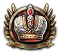
重新召集缙绅会议 needs to be completed.| 国家 | Tag | 首都 | 意识形态 | 核心位于 | 备注 | 苏联已解体 |
|---|---|---|---|---|---|---|
| ABK | Sukhumi | Shares its core with |
||||
| ALT | Oyrot-Tura | |||||
| ARM | Yerevan | |||||
| AZR | Baku | Shares two cores with |
||||
| BSK | Ufa | |||||
| BLR | Minsk | |||||
| BUK | 布哈拉 | Shares its two cores with |
||||
| BYA | Ulan Ude | |||||
| CIN | Grozny | |||||
| CKK | Anadyr | Shares its core with the |
||||
| CHU | Cheboskary | |||||
| CRI | Sevastopol | Shares a core with |
||||
| DAG | Makhachkala | |||||
| EVE | Tura | |||||
| FER | 赤塔 | Shares a core with Shares two cores with |
||||
| GEO | Tiblisi | Shares a core with |
||||
| KBK | Nalchik | |||||
| KAL | Elista | |||||
| KKP | Nukus | Shares its two cores with |
||||
| KAR | Äänislinna (Petrozavodsk) | Shares a core with |
||||
| KAZ | Alma-Ata | |||||
| KHA | Abakan | |||||
| KHI | 希瓦 | Shares its two cores with |
||||
| KOM | Syktyvkar | |||||
| KYR | Frunze | |||||
| MEL | Yoshkar-Ola | |||||
| NEN | Naryan Mar | |||||
| NOA | Ordzhonikidze | |||||
| OVO | Khanty-Mansysk | |||||
| YAK | Yakutsk | |||||
| TAJ | Dushanbe | Shares a core with |
||||
| TAT | 喀山 | |||||
| TAY | Dudinka | |||||
| TMS | 阿什哈巴德 | Shares a core with |
||||
| UDM | Izhevsk | |||||
| UKR | Kyiv (Kiev) | Shares a core with |
||||
| UZB | 塔什干 | Shares two cores with |
||||
| VLA | 符拉迪沃斯托克 | Shares its cores with the |
||||
| VGE | Engels | |||||
| YAM | Salekhard |
 阿布哈兹 以民主主义
阿布哈兹 以民主主义 开局，每 4 年举行一次选举。下一次选举在 1940 年 1 月。
开局，每 4 年举行一次选举。下一次选举在 1940 年 1 月。
| 政党 | 意识形态 | 支持率 | 党派领袖 | 国家名称 | 是否执政？ |
|---|---|---|---|---|---|
| The People's Assembly of Abkhazia (PAA) | 60% | 通用 | 阿布哈兹 | 是 | |
| The Communist Party of Abkhazia (CPA) | 10% | Kirill Bechvaya | Abkhaz Independent Commune | No | |
| Abkhaz Ultraortodox Union (AUO) | 30% | 通用 | Orthodox State of Abkhazia | No | |
| Abkhaz Military | 0% | 通用 | Abkhaz Military Authority | No |
 苏联
苏联  共产主义 subject name: Abkhaz Autonomous Soviet Socialist Republic
共产主义 subject name: Abkhaz Autonomous Soviet Socialist Republic
| 意识形态 | 肖像 | 名称 | 党派 | 特质 | 效果 | 可用 |
|---|---|---|---|---|---|---|
斯大林主义 |
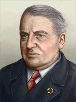 |
Kirill Bechvaya | The Communist Party of Abkhazia | – | – | 起始领袖 |
 阿布哈兹 can form the
阿布哈兹 can form the
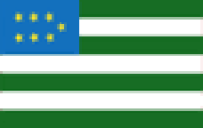
北高加索山区共和国 Altai 以民主主义
Altai 以民主主义 开局，每 4 年举行一次选举。下一次选举在 1940 年 1 月。
开局，每 4 年举行一次选举。下一次选举在 1940 年 1 月。
| 政党 | 意识形态 | 支持率 | 党派领袖 | 国家名称 | 是否执政？ |
|---|---|---|---|---|---|
| El Kurultai (ELK) | 50% | 通用 | Altai | 是 | |
| Gorno-Altai Regional Bolshevik Party (ARB) | 30% | Samuil Yufit | Oyrot Soviet Republic | No | |
| Altai National Revisionists (ANR) | 10% | 通用 | New Ghengisid Empire of Altaians and Oirats | No | |
| Karakorum Government (KGM) | 10% | Grigory Gurkin | Confederated Republic of Altai | No |
 苏联
苏联  共产主义 subject name: Gorno-Altai Autonomous Soviet Socialist Republic
共产主义 subject name: Gorno-Altai Autonomous Soviet Socialist Republic
| 意识形态 | 肖像 | 名称 | 党派 | 特质 | 效果 | 可用 |
|---|---|---|---|---|---|---|
斯大林主义 |
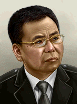 |
Samuil Yufit | Gorno-Altai | – | – | 起始领袖 |
温和主义 |
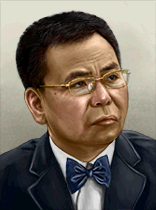 |
Grigory Gurkin | 中立主义 | – | – | 起始领袖 |
 Altai can form
Altai can form
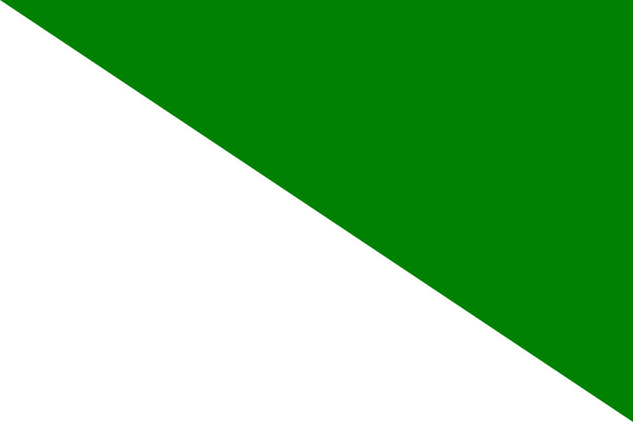
西伯利亚亚美尼亚共和国 以民主主义开局，不举行选举。
以民主主义开局，不举行选举。
| 政党 | 意识形态 | 支持率 | 党派领袖 | 国家名称 | 是否执政？ |
|---|---|---|---|---|---|
| Armenian Revolutionary Federation | 30% | Hovhannes Kajaznuni | 亚美尼亚共和国 | 是 | |
| Communist Party of Armenia | 36% | Grigor Harutyunyan | Armenian Socialist Republic | No | |
| Armenian Legion | 34% | Drastamat Kanayan | Greater Armenia | No | |
| Central Authority | 0% | 通用 | Armenian Independent Territories | No |
| 意识形态 | 肖像 | 名称 | 党派 | 特质 | 效果 | 可用 |
|---|---|---|---|---|---|---|
保守主义 |
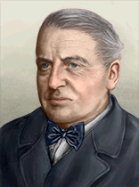 |
Hovhannes Kajaznuni | Armenian Revolutionary Federation | – | – | 起始领袖 |
斯大林主义 |
Grigor Harutyunyan | Communist Party of Armenia | – | – | 起始领袖 | |
法西斯主义 |
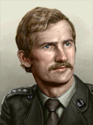 |
Drastamat Kanayan | Armenian Legion | – | – | 起始领袖 |
 亚美尼亚 can form
亚美尼亚 can form
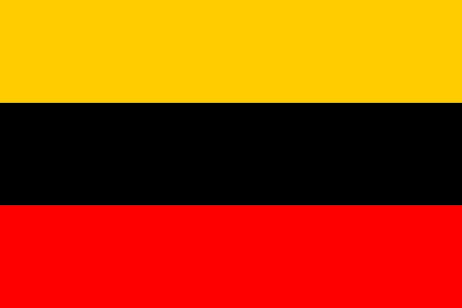
Transcaucasia阿塞拜疆民主共和国 以民主主义开局，不举行选举。
以民主主义开局，不举行选举。
| 政党 | 意识形态 | 支持率 | 党派领袖 | 国家名称 | 是否执政？ |
|---|---|---|---|---|---|
| Müsavat | 30% | Mammad Amin Rasulzade | 阿塞拜疆民主共和国 | 是 | |
| Communist Party of Azerbaijan | 40% | Mir Jafar Baghirov | Azerbaijan Socialist Republic | No | |
| Fire Horse Clique | 0% | 通用 | Empire of Fire | No | |
| Ittihad | 30% | Gara Garabeyov | Islamic Republic of Azerbaijan | No |
| 意识形态 | 肖像 | 名称 | 党派 | 特质 | 效果 | 可用 |
|---|---|---|---|---|---|---|
保守主义 |
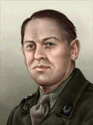 |
Mammad Amin Rasulzade | Müsavat | – | – | 起始领袖 |
斯大林主义 |
Mir Jafar Baghirov | Communist Party of Azerbaijan | – | – | 起始领袖 | |
温和主义 |
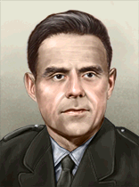 |
Gara Garabeyov | Ittihad | – | – | 起始领袖 |
 阿塞拜疆 can form Transcaucasia
阿塞拜疆 can form Transcaucasia
 Bashkortostan 以民主主义
Bashkortostan 以民主主义 开局，每 4 年举行一次选举。下一次选举在 1940 年 1 月。
开局，每 4 年举行一次选举。下一次选举在 1940 年 1 月。
| 政党 | 意识形态 | 支持率 | 党派领袖 | 国家名称 | 是否执政？ |
|---|---|---|---|---|---|
| Bashkortostan Federal League (BFL) | 50% | 通用 | Bashkortostan | 是 | |
| Bashkir Bolshevik Party (BPP) | 20% | Yakov Borisovich Bykin | Bashkirian Commune | No | |
| Bashkir National Unification Party (BNU) | 10% | 通用 | Greater Bashkiria | No | |
| Bashkir Ufa Association (BUA) | 20% | 通用 | Independent Ufa Governorate | No |
 苏联
苏联  共产主义 subject name: Bashkir Autonomous Soviet Socialist Republic
共产主义 subject name: Bashkir Autonomous Soviet Socialist Republic
| 意识形态 | 肖像 | 名称 | 党派 | 特质 | 效果 | 可用 |
|---|---|---|---|---|---|---|
列宁主义 |
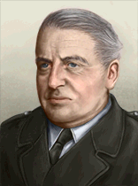 |
Yakov Borisovich Bykin | Bashkir Bolshevik Party | – | – | 起始领袖 |
 Bashkortostan can form Idel-Ural
Bashkortostan can form Idel-Ural
白俄罗斯共和国 以民主主义开局，不举行选举。
以民主主义开局，不举行选举。
| 政党 | 意识形态 | 支持率 | 党派领袖 | 国家名称 | 是否执政？ |
|---|---|---|---|---|---|
| Belarusian Christian Democracy | 15% | Adam Stankievič | 白俄罗斯共和国 | 是 | |
| Communist Party of Belarus | 60% | Panteleimon Ponomarenko | Belarusian Socialist Republic | No | |
| Belarusian Central Council | 5% | Radasłaŭ Astroŭski | White Ruthenia | No | |
| Bożeniec Jełowicki | 20% | Radasłaŭ Astroŭski | 白俄罗斯 | No |
 苏联
苏联  共产主义 subject name: Byelorussian Independent SSR
共产主义 subject name: Byelorussian Independent SSR
| 意识形态 | 肖像 | 名称 | 党派 | 特质 | 效果 | 可用 |
|---|---|---|---|---|---|---|
社会主义 |
Adam Stankievič | Belarusian Christian Democracy | – | – | 起始领袖 | |
斯大林主义 |
Panteleimon Ponomarenko | Communist Party of Belarus | – | – | 起始领袖 | |
法西斯主义 |
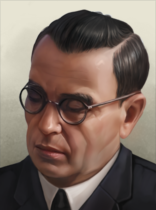 |
Radasłaŭ Astroŭski | Belarusian Central Council | Anti-Communist 保守民族主义者 |
|
起始领袖 |
Despotism |
Radasłaŭ Astroŭski | Bożeniec Jełowicki | Anti-Communist 保守民族主义者 |
|
起始领袖 |
布哈拉贾迪德共和国 开局时为民主主义，每 4 年举行一次选举。下一次选举在 1940 年 1 月。
开局时为民主主义，每 4 年举行一次选举。下一次选举在 1940 年 1 月。
| 政党 | 意识形态 | 支持率 | 党派领袖 | 国家名称 | 是否执政？ |
|---|---|---|---|---|---|
| Young Bukharans (YBU) | 70% | 通用 | 布哈拉贾迪德共和国 | 是 | |
| Bukharan People's Council (BPC) | 10% | Polat Usmon Khodzhayev | Bukharan People's Republic | No | |
| Bukharan Sufist Organisation (BSO) | 10% | 通用 | Bukharan Sufist State | No | |
| Manghud Dynasty | 10% | 赛义德·米尔·穆罕默德·阿利姆·汗 | Emirate of Bukhara | No |
 苏联
苏联  共产主义 subject name: Bukharan People's Soviet Republic
共产主义 subject name: Bukharan People's Soviet Republic
| 意识形态 | 肖像 | 名称 | 党派 | 特质 | 效果 | 可用 |
|---|---|---|---|---|---|---|
列宁主义 |
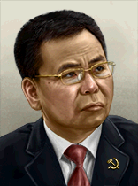 |
Polat Usmon Khodzhayev | Bukharan People's Council | – | – | 起始领袖 |
Despotism |
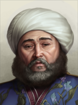 |
赛义德·米尔·穆罕默德·阿利姆·汗 | Manghud Dynasty | – | – | 起始领袖 |
 布哈拉 can form
布哈拉 can form
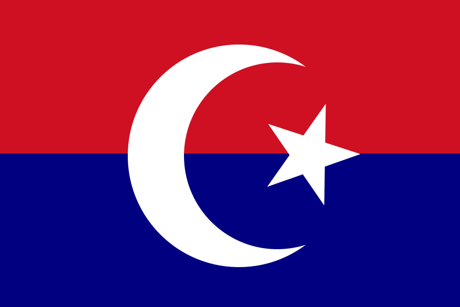
Turkestan布里亚特共和国 开局时为民主主义，每 4 年举行一次选举。下一次选举在 1940 年 1 月。
开局时为民主主义，每 4 年举行一次选举。下一次选举在 1940 年 1 月。
| 政党 | 意识形态 | 支持率 | 党派领袖 | 国家名称 | 是否执政？ |
|---|---|---|---|---|---|
| The People's Khural (TPK) | 50% | 通用 | 布里亚特共和国 | 是 | |
| Buryat Bolshevik Regional Committee (BBC) | 0% | Seymon Ignatyev | Buryat-Mongol People's Union | No | |
| Buryat Ultranationalist Party (BUP) | 0% | 通用 | Great Buryat-Mongol Yuan Successor State | No | |
| Chakravartin Restorationists | 50% | Chakravartin Bidia Dandarovitch Dandaron | The Dharmatic Kingdom of Buryatia | No |
 苏联
苏联  共产主义 subject name: Buryat-Mongol Autonomous Soviet Socialist Republic
共产主义 subject name: Buryat-Mongol Autonomous Soviet Socialist Republic
 日本
日本  中立主义 subject name: Trans-Mongolian Protectorate
中立主义 subject name: Trans-Mongolian Protectorate
 日本
日本  法西斯主义 subject name: Ulan Ude Autonomous Army
法西斯主义 subject name: Ulan Ude Autonomous Army
| 意识形态 | 肖像 | 名称 | 党派 | 特质 | 效果 | 可用 |
|---|---|---|---|---|---|---|
斯大林主义 |
Seymon Ignatyev | Buryat Bolshevik Regional Committee | – | – | 起始领袖 | |
Despotism |
Chakravartin Bidia Dandarovitch Dandaron | Chakravartin Restorationists | – | – | 起始领袖 |
 Buryatia can form 西伯利亚和
Buryatia can form 西伯利亚和
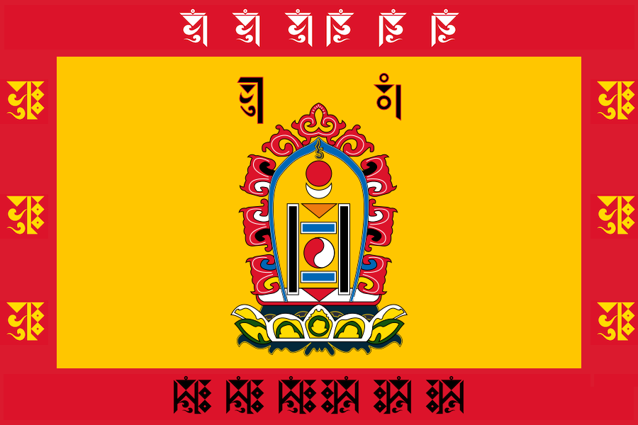
大蒙古车臣-印古什共和国 开局时为民主主义，每 4 年举行一次选举。下一次选举在 1940 年 1 月。
开局时为民主主义，每 4 年举行一次选举。下一次选举在 1940 年 1 月。
| 政党 | 意识形态 | 支持率 | 党派领袖 | 国家名称 | 是否执政？ |
|---|---|---|---|---|---|
| All-National Congress of the Chechen People (CCP) | 80% | 通用 | 车臣-印古什共和国 | 是 | |
| The Supreme Soviet of the Chechen-Ingush ASSR (SSC) | 10% | Yusup Tambiev | Chechen-Ingush People's Republic | No | |
| Provisional Popular Revolutionary Government (RGC) | 10% | Hasan Israilov | Caucasian Emirate | No | |
| United Front for Chechen-Ingush Salvation (CIS) | 0% | 通用 | Chechnya-Ingushetia | No |
 苏联
苏联  共产主义 subject name: Checheno-Ingush Autonomous Soviet Socialist Republic
共产主义 subject name: Checheno-Ingush Autonomous Soviet Socialist Republic
| 意识形态 | 肖像 | 名称 | 党派 | 特质 | 效果 | 可用 |
|---|---|---|---|---|---|---|
列宁主义 |
Yusup Tambiev | The Supreme Soviet of the Chechen-Ingush ASSR | – | – | 起始领袖 | |
法西斯主义 |
Hasan Israilov | Provisional Popular Revolutionary Government | – | – | 起始领袖 |
 Chechnya-Ingushetia can form the 北高加索山区共和国
Chechnya-Ingushetia can form the 北高加索山区共和国
楚科奇共和国 开局时为民主主义，每 4 年举行一次选举。下一次选举在 1940 年 1 月。
开局时为民主主义，每 4 年举行一次选举。下一次选举在 1940 年 1 月。
| 政党 | 意识形态 | 支持率 | 党派领袖 | 国家名称 | 是否执政？ |
|---|---|---|---|---|---|
| The Anadyr Duma (ADU) | 50% | 通用 | 楚科奇共和国 | 是 | |
| Chukotkan Bolshevik Union (CBU) | 20% | 通用 | Chukotkan People's Republic | No | |
| The Chukchi Front (CCF) | 30% | 通用 | Chukchi Nation | No | |
| Chukotkan Independant Party (CIP) | 0% | 通用 | Independent Chukchi Territories | No |
 苏联
苏联  共产主义 subject name: Chukotka National Okrug
共产主义 subject name: Chukotka National Okrug
 日本
日本  中立主义 subject name: Chukchi Protectorate
中立主义 subject name: Chukchi Protectorate
 日本
日本  法西斯主义 subject name: Bering Strait Autonomous Territory
法西斯主义 subject name: Bering Strait Autonomous Territory
 楚科奇 can form 西伯利亚
楚科奇 can form 西伯利亚
 楚瓦什 以民主主义
楚瓦什 以民主主义 开局，每 4 年举行一次选举。下一次选举在 1940 年 1 月。
开局，每 4 年举行一次选举。下一次选举在 1940 年 1 月。
| 政党 | 意识形态 | 支持率 | 党派领袖 | 国家名称 | 是否执政？ |
|---|---|---|---|---|---|
| Chuvash-Turkic State Council (CSC) | 50% | 通用 | 楚瓦什 | 是 | |
| Chuvash Bolshevik Party (CBP) | 10% | Gerasim Ivanovich Ivanov | Chuvash Soviet | No | |
| Chuvash National Supremacy (CNS) | 0% | 通用 | Neo Volga-Bulgaria | No | |
| Chuvash Orthodox Union (COU) | 40% | 通用 | Orthodox Union of Descendants of Suars and Volga Bulgarians | No |
 苏联
苏联  共产主义 subject name: Chuvash Autonomous Soviet Socialist Republic
共产主义 subject name: Chuvash Autonomous Soviet Socialist Republic
| 意识形态 | 肖像 | 名称 | 党派 | 特质 | 效果 | 可用 |
|---|---|---|---|---|---|---|
列宁主义 |
Gerasim Ivanovich Ivanov | Chuvash Bolshevik Party | – | – | 起始领袖 |
 楚瓦什 can form Idel-Ural
楚瓦什 can form Idel-Ural
 Crimea 以民主主义
Crimea 以民主主义 开局，每 4 年举行一次选举。下一次选举在 1940 年 1 月。
开局，每 4 年举行一次选举。下一次选举在 1940 年 1 月。
| 政党 | 意识形态 | 支持率 | 党派领袖 | 国家名称 | 是否执政？ |
|---|---|---|---|---|---|
| The Crimean Political Representative (CPR) | 50% | 通用 | Crimea | 是 | |
| Crimean Department of Bolshevism (CDB) | 30% | Ilyas Tarkhan | Crimean People's Republic | No | |
| Crimean Ultranationalist Coalition (CUC) | 20% | 通用 | Crimean Khanate | No | |
| the Crimean Military Political Union (CRM) | 0% | 通用 | Crimean Regime | No |
 苏联
苏联  共产主义 subject name: Crimean Autonomous Soviet Socialist Republic
共产主义 subject name: Crimean Autonomous Soviet Socialist Republic
 德国
德国  法西斯主义 subject name: Teilbezirk Taurien
法西斯主义 subject name: Teilbezirk Taurien
 Italian
Italian  法西斯主义 subject name: Regno Bosporano
法西斯主义 subject name: Regno Bosporano
| 意识形态 | 肖像 | 名称 | 党派 | 特质 | 效果 | 可用 |
|---|---|---|---|---|---|---|
列宁主义 |
Ilyas Tarkhan | Crimean Department of Bolshevism | – | – | 起始领袖 |
山地达吉斯坦共和国 开局时为民主主义，每 4 年举行一次选举。下一次选举在 1940 年 1 月。
开局时为民主主义，每 4 年举行一次选举。下一次选举在 1940 年 1 月。
| 政党 | 意识形态 | 支持率 | 党派领袖 | 国家名称 | 是否执政？ |
|---|---|---|---|---|---|
| The People’s Assembly of Dagestan (PAD) | 50% | 通用 | 山地达吉斯坦共和国 | 是 | |
| Dagestan Bolshevik Party (DBP) | 10% | Adil-Girey Takhtarov | Dagestani People's Republic | No | |
| Dagestani Front for National Salvation (DNS) | 10% | 通用 | Legionary Dagestani State | No | |
| Supporters of the North Caucasian Emirate | 30% | Khair Hajji Uzunsky | Second North Caucasian Emirate | No |
 苏联
苏联  共产主义 subject name: Dagestan Autonomous Soviet Socialist Republic
共产主义 subject name: Dagestan Autonomous Soviet Socialist Republic
| 意识形态 | 肖像 | 名称 | 党派 | 特质 | 效果 | 可用 |
|---|---|---|---|---|---|---|
斯大林主义 |
Gerasim Ivanovich Ivanov | Dagestan Bolshevik Party | – | – | 起始领袖 | |
Despotism |
Khair Hajji Uzunsky | Supporters of the North Caucasian Emirate | – | – | 起始领袖 |
 Dagestan can form the 北高加索山区共和国
Dagestan can form the 北高加索山区共和国
 Evenkia 以民主主义
Evenkia 以民主主义 开局，每 4 年举行一次选举。下一次选举在 1940 年 1 月。
开局，每 4 年举行一次选举。下一次选举在 1940 年 1 月。
| 政党 | 意识形态 | 支持率 | 党派领袖 | 国家名称 | 是否执政？ |
|---|---|---|---|---|---|
| Evenk Legislative Assembly (ELA) | 60% | 通用 | Evenkia | 是 | |
| Communist Party of Evenkia (CPE) | 20% | 通用 | Evenki Soviet Republic | No | |
| East-Siberian Unification Movement (ESU) | 0% | 通用 | East-Siberian State | No | |
| United Evenkia (UE) | 20% | 通用 | Federal State of Evenkia | No |
 Evenkia can form 西伯利亚
Evenkia can form 西伯利亚
远东共和国 开局时为民主主义，每 4 年举行一次选举。下一次选举在 1940 年 1 月。
开局时为民主主义，每 4 年举行一次选举。下一次选举在 1940 年 1 月。
| 政党 | 意识形态 | 支持率 | 党派领袖 | 国家名称 | 是否执政？ |
|---|---|---|---|---|---|
| Chita Democratic National Assembly (CDA) | 60% | 通用 | 远东共和国 | 是 | |
| Far Eastern Bolshevik Assembly (EBA) | 40% | 通用 | Far Eastern Commune | No | |
| Far Eastern Alternative (FEA) | 0% | 通用 | East Siberian Empire | No | |
| Far Eastern Independent Party (EIP) | 0% | 通用 | Independent State of the Far East | No |
 苏联
苏联  共产主义 subject name: The Far Eastern Soviet Republic
共产主义 subject name: The Far Eastern Soviet Republic
 日本
日本  中立主义 subject name: Japanese Far East Protectorate
中立主义 subject name: Japanese Far East Protectorate
 日本
日本  法西斯主义 subject name: East Siberian Army
法西斯主义 subject name: East Siberian Army
The  远东共和国 can form 西伯利亚
远东共和国 can form 西伯利亚
格鲁吉亚共和国 以民主主义开局，不举行选举。
以民主主义开局，不举行选举。
| 政党 | 意识形态 | 支持率 | 党派领袖 | 国家名称 | 是否执政？ |
|---|---|---|---|---|---|
| Social Democratic Party of Georgia (Georgian Menshevik Party) | 40% | Noe Zhordania | 格鲁吉亚共和国 | 是 | |
| Communist Party of Georgia | 40% | Kandid Charkviani | Georgian Socialist Republic | No | |
| The Patriotic Union Tetri Giorgi | 10% | Grigol Robakidze | Caucasus Authority | No | |
| Union of Georgian Traditionalists | 10% | George Bagration of Mukhrani | Kingdom of Georgia | No |
 德国
德国  法西斯主义 subject name: Reichskommissariat Kaukasien
法西斯主义 subject name: Reichskommissariat Kaukasien
| 意识形态 | 肖像 | 名称 | 党派 | 特质 | 效果 | 可用 |
|---|---|---|---|---|---|---|
自由主义 |
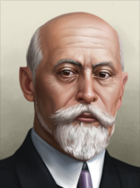 |
Noe Zhordania | Social Democratic Party of Georgia | Reformist Menshevik |
|
起始领袖 |
斯大林主义 |
Kandid Charkviani | Communist Party of Georgia | 坚定的斯大林主义者 |
|
起始领袖 | |
斯大林主义 |
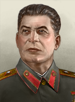 |
Ioseb Jughashvili | 全联盟共产党（布尔什维克） | Vengeful Stalinist |
| |
法西斯主义 |
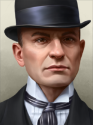 |
Grigol Robakidze | The Patriotic Union Tetri Giorgi | Georgian Irredentist Writer | 起始领袖 | |
Despotism |
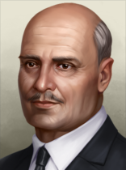 |
George Bagration of Mukhrani | Union of Georgian Traditionalists | 神圣国王 |
|
起始领袖 |
| 肖像 | 名称 | 特质 | 要求 | |||||
|---|---|---|---|---|---|---|---|---|
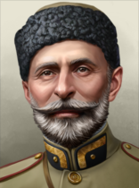 |
格奥尔基·克维尼塔泽 | 3 | 2 | 4 | 2 | 2 | 步兵将领 |
– |
| 肖像 | 名称 | 特质 | 要求 | |||||
|---|---|---|---|---|---|---|---|---|
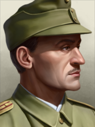 |
沙尔瓦·马格拉凯利泽 | 3 | 3 | 3 | 1 | 1 | 步兵将领 山地兵 |
– |
 佐治亚 can form Transcaucasia
佐治亚 can form Transcaucasia
卡巴尔达-巴尔卡尔联邦共和国 开局时为民主主义，每 4 年举行一次选举。下一次选举在 1940 年 1 月。
开局时为民主主义，每 4 年举行一次选举。下一次选举在 1940 年 1 月。
| 政党 | 意识形态 | 支持率 | 党派领袖 | 国家名称 | 是否执政？ |
|---|---|---|---|---|---|
| Kabardin National Parliament (KNP) | 70% | 通用 | 卡巴尔达-巴尔卡尔联邦共和国 | 是 | |
| Kabardino-Balkarian Regional Bolshevik Committee (KBB) | 0% | Betal Kalmykov | Kabardino-Balkar Soviet Republic | No | |
| All-Circassian Party (ACP) | 30% | 通用 | Circassian Realm | No | |
| Nalchik Autonomous Assembly (NAA) | 0% | 通用 | Kabardino-Balkarian Mountainous Republic | No |
 苏联
苏联  共产主义 subject name: Kabardino-Balkarian Autonomous Soviet Socialist Republic
共产主义 subject name: Kabardino-Balkarian Autonomous Soviet Socialist Republic
| 意识形态 | 肖像 | 名称 | 党派 | 特质 | 效果 | 可用 |
|---|---|---|---|---|---|---|
斯大林主义 |
Betal Kalmykov | Kabardino-Balkarian Regional Bolshevik Committee | – | – | 起始领袖 |
 Kabardino-Balkaria can form the 北高加索山区共和国
Kabardino-Balkaria can form the 北高加索山区共和国
 Kalmykia 以民主主义
Kalmykia 以民主主义 开局，每 4 年举行一次选举。下一次选举在 1940 年 1 月。
开局，每 4 年举行一次选举。下一次选举在 1940 年 1 月。
| 政党 | 意识形态 | 支持率 | 党派领袖 | 国家名称 | 是否执政？ |
|---|---|---|---|---|---|
| The People's Khural (PKH) | 60% | 通用 | Kalmykia | 是 | |
| The Kalmyk People’s Bolshevik Union (KPB) | 20% | I.M Badmayev | Kalmyk Socialist Workers Union | No | |
| The Kalmyk Legion (KLG) | 10% | 通用 | Great Horde | No | |
| Khaganists | 10% | Khagan Nikolai Tundutov | Kalmyk Khaganate | No |
 苏联
苏联  共产主义 subject name: Kalmyk Autonomous Soviet Socialist Republic
共产主义 subject name: Kalmyk Autonomous Soviet Socialist Republic
| 意识形态 | 肖像 | 名称 | 党派 | 特质 | 效果 | 可用 |
|---|---|---|---|---|---|---|
列宁主义 |

|
I.M Badmayev | The Kalmyk People’s Bolshevik Union | – | – | 起始领袖 |
Despotism |
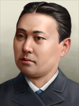 |
Khagan Nikolai Tundutov | Khaganists | – | – | 起始领袖 |
 Kalmykia can form 大蒙古
Kalmykia can form 大蒙古
卡拉卡尔帕克斯坦共和国 开局时为民主主义，每 4 年举行一次选举。下一次选举在 1940 年 1 月。
开局时为民主主义，每 4 年举行一次选举。下一次选举在 1940 年 1 月。
| 政党 | 意识形态 | 支持率 | 党派领袖 | 国家名称 | 是否执政？ |
|---|---|---|---|---|---|
| Karakalpak Constitutionalists (KCL) | 50% | 通用 | 卡拉卡尔帕克斯坦共和国 | 是 | |
| Karakalpak Bolshevik Party (KKB) | 30% | Islam Sadyk-ogly Aliyev | Karakalpak Socialist Union-State | No | |
| Karakalpak National Supremacists (KNS) | 20% | 通用 | Karakalpak National State | No | |
| Karakalpakstani United Front (KUF) | 0% | 通用 | Karakalpakstan | No |
 苏联
苏联  共产主义 subject name: Karakalpak Autonomous Soviet Socialist Republic
共产主义 subject name: Karakalpak Autonomous Soviet Socialist Republic
| 意识形态 | 肖像 | 名称 | 党派 | 特质 | 效果 | 可用 |
|---|---|---|---|---|---|---|
斯大林主义 |
Islam Sadyk-ogly Aliyev | Karakalpak Bolshevik Party | – | – | 起始领袖 |
 Karakalpakstan can form Turkestan
Karakalpakstan can form Turkestan
 卡累利阿 以民主主义
卡累利阿 以民主主义 开局，每 4 年举行一次选举。下一次选举在 1940 年 1 月。
开局，每 4 年举行一次选举。下一次选举在 1940 年 1 月。
| 政党 | 意识形态 | 支持率 | 党派领袖 | 国家名称 | 是否执政？ |
|---|---|---|---|---|---|
| Väinämöinen Supporters | 50% | Ukki Väinämöinen | 卡累利阿 | 是 | |
| Karelo-Finnish Bolshevik Party (KFB) | 40% | Pēteris Irklis | Karelian People's Republic | No | |
| Pan-Finnic Assembly (PFA) | 10% | Ukki Väinämöinen | Karelo-Finnic Unitary State | No | |
| the Karelian National Junta (KNJ) | 0% | Jalmari Takkinen | Karelo-Finnish Military Junta | No |
 苏联
苏联  共产主义 subject name: Karelian Autonomous Soviet Socialist Republic
共产主义 subject name: Karelian Autonomous Soviet Socialist Republic
| 意识形态 | 肖像 | 名称 | 党派 | 特质 | 效果 | 可用 |
|---|---|---|---|---|---|---|
保守主义 |
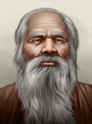 |
Ukki Väinämöinen | Väinämöinen Supporters | – | – | 起始领袖 |
马克思主义 |
Pēteris Irklis | Karelian People's Republic | – | – | 起始领袖 | |
法西斯主义 |
Ukki Väinämöinen | Pan-Finnic Assembly | Grandpa Väinämöinen |
|
起始领袖 | |
中间主义 |
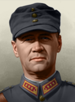 |
Jalmari Takkinen | the Karelian National Junta | Tribal Warrior |
|
起始领袖 |
| 肖像 | 名称 | 特质 | 要求 | |||||
|---|---|---|---|---|---|---|---|---|
| Jalmari Takkinen | 2 | 3 | 2 | 1 | 1 | 突击队 冬季专家 游骑兵 |
– |
 卡累利阿 can form the 北欧联盟
卡累利阿 can form the 北欧联盟
 Kazakhstan 以民主主义
Kazakhstan 以民主主义 开局，不举行选举。
开局，不举行选举。
| 政党 | 意识形态 | 支持率 | 党派领袖 | 国家名称 | 是否执政？ |
|---|---|---|---|---|---|
| Alash Party | 60% | Ilyas Zhansugurov | Kazakhstan | 是 | |
| Communist Party of Kazakhstan | 40% | Nikolay Aleksandrovich Skvortsov | Kazakh Soviet Socialist Republic | No | |
| Zhuze Ultşildiq | 0% | 通用 | Alash Orda | No | |
| Royalists | 0% | 通用 | Kazakh Khanate | No |
| 意识形态 | 肖像 | 名称 | 党派 | 特质 | 效果 | 可用 |
|---|---|---|---|---|---|---|
保守主义 |
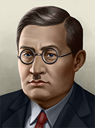 |
Ilyas Zhansugurov | Alash Party | – | – | 起始领袖 |
斯大林主义 |
Nikolay Aleksandrovich Skvortsov | Communist Party of Kazakhstan | – | – | 起始领袖 |
 Kazakhstan can form Turkestan
Kazakhstan can form Turkestan
哈卡斯共和国 开局时为民主主义，每 4 年举行一次选举。下一次选举在 1940 年 1 月。
开局时为民主主义，每 4 年举行一次选举。下一次选举在 1940 年 1 月。
| 政党 | 意识形态 | 支持率 | 党派领袖 | 国家名称 | 是否执政？ |
|---|---|---|---|---|---|
| The People’s Khural (TPK) | 70% | 通用 | 哈卡斯共和国 | 是 | |
| Khakass Bolshevik Regional Committee (KBC) | 20% | 通用 | Khakas Soviet Republic | No | |
| Neo Yensei-Kyrgyz Party (YKP) | 0% | 通用 | Neo Yensei-Kyrgyz Khaganate | No | |
| Khakas Regional Committee | 10% | 通用 | Khaganate of the Northern Dragon | No |
 苏联
苏联  共产主义 subject name: Khakas Autnomous Oblast
共产主义 subject name: Khakas Autnomous Oblast
 哈卡斯 can form 西伯利亚
哈卡斯 can form 西伯利亚
希瓦贾迪德共和国 开局时为民主主义，每 4 年举行一次选举。下一次选举在 1940 年 1 月。
开局时为民主主义，每 4 年举行一次选举。下一次选举在 1940 年 1 月。
| 政党 | 意识形态 | 支持率 | 党派领袖 | 国家名称 | 是否执政？ |
|---|---|---|---|---|---|
| Khivan People's Jadid Councils (KJC) | 60% | 通用 | 希瓦贾迪德共和国 | 是 | |
| Khorezm People's Soviet (KPS) | 20% | Nedirbay Aytakov | Khorezm People's Republic | No | |
| Khivan Basmachi Movement (KBM) | 10% | 朱奈德·汗（Junaid Khan） | Basmachi State of Khiva | No | |
| Khanate Pretenders | 10% | 通用 | New Khivan Khanate | No |
 苏联
苏联  共产主义 subject name: Khorezm People's Soviet Republic
共产主义 subject name: Khorezm People's Soviet Republic
| 意识形态 | 肖像 | 名称 | 党派 | 特质 | 效果 | 可用 |
|---|---|---|---|---|---|---|
列宁主义 |
Nedirbay Aytakov | Khorezm People's Soviet | – | – | 起始领袖 | |
法西斯主义 |
朱奈德·汗（Junaid Khan） | Khivan Basmachi Movement | – | – | 起始领袖 |
 希瓦 can form Turkestan
希瓦 can form Turkestan
科米共和国 开局时为民主主义，每 4 年举行一次选举。下一次选举在 1940 年 1 月。
开局时为民主主义，每 4 年举行一次选举。下一次选举在 1940 年 1 月。
| 政党 | 意识形态 | 支持率 | 党派领袖 | 国家名称 | 是否执政？ |
|---|---|---|---|---|---|
| State Council of the Komi Republic (CKR) | 50% | 通用 | 科米共和国 | 是 | |
| Komi Federal Commune (KFC) | 40% | Pavel Murashev | Komi Socialist State | No | |
| Permian Ultranationalists (PEU) | 10% | 通用 | New Permian State | No | |
| Komi People's Council (KPC) | 0% | 通用 | Komi State | No |
 苏联
苏联  共产主义 subject name: Komi Autonomous Soviet Socialist Republic
共产主义 subject name: Komi Autonomous Soviet Socialist Republic
| 意识形态 | 肖像 | 名称 | 党派 | 特质 | 效果 | 可用 |
|---|---|---|---|---|---|---|
斯大林主义 |
Pavel Murashev | Komi Federal Commune | – | – | 起始领袖 |
 Kyrgyzstan 以民主主义
Kyrgyzstan 以民主主义 开局，每 4 年举行一次选举。下一次选举在 1940 年 1 月。
开局，每 4 年举行一次选举。下一次选举在 1940 年 1 月。
| 政党 | 意识形态 | 支持率 | 党派领袖 | 国家名称 | 是否执政？ |
|---|---|---|---|---|---|
| 民主主义 | 50% | 通用 | Kyrgyzstan | 是 | |
| 共产主义 | 40% | 通用 | Kirghiz Soviet Socialist Republic | No | |
| 法西斯主义 | 1% | 通用 | Neo-Kyrgyz Khanate | No | |
| 中立主义 | 9% | 通用 | Kirghizia | No |
 Kyrgyzstan can form Turkestan
Kyrgyzstan can form Turkestan
 马里埃尔 以民主主义
马里埃尔 以民主主义 开局，每 4 年举行一次选举。下一次选举在 1940 年 1 月。
开局，每 4 年举行一次选举。下一次选举在 1940 年 1 月。
| 政党 | 意识形态 | 支持率 | 党派领袖 | 国家名称 | 是否执政？ |
|---|---|---|---|---|---|
| Meadow Mari State Assembly (MMA) | 50% | 通用 | 马里埃尔 | 是 | |
| Mari Communist Party (MCP) | 10% | Zinovy Zhadinov | Mari Independent Farmers Commune | No | |
| Kugu Jumo (the Great God) (KJU) | 40% | 通用 | Realm of the Great God of Light | No | |
| Mari El Party of National Liberation and Unification (MNU) | 0% | 通用 | Free Mari National Republic | No |
 苏联
苏联  共产主义 subject name: Mari Autonomous Soviet Socialist Republic
共产主义 subject name: Mari Autonomous Soviet Socialist Republic
| 意识形态 | 肖像 | 名称 | 党派 | 特质 | 效果 | 可用 |
|---|---|---|---|---|---|---|
斯大林主义 |
Zinovy Zhadinov | Mari Communist Party | – | – | 起始领袖 |
 马里埃尔 can form Idel-Ural
马里埃尔 can form Idel-Ural
 涅涅茨 以民主主义
涅涅茨 以民主主义 开局，每 4 年举行一次选举。下一次选举在 1940 年 1 月。
开局，每 4 年举行一次选举。下一次选举在 1940 年 1 月。
| 政党 | 意识形态 | 支持率 | 党派领袖 | 国家名称 | 是否执政？ |
|---|---|---|---|---|---|
| Assembly of Deputies of the Nenets State (ADN) | 50% | 通用 | 涅涅茨 | 是 | |
| Nenets Bolshevik Party (NBP) | 20% | 通用 | Nenets People's Republic | No | |
| Nenets Unification Movement (NUM) | 0% | 通用 | Greater Nenets State | No | |
| Nenets Regional Committee (NRC) | 30% | 通用 | Nenets Migratory State | No |
 苏联
苏联  共产主义 subject name: Nenets National Okrug
共产主义 subject name: Nenets National Okrug
 北奥塞梯-阿兰 以民主主义
北奥塞梯-阿兰 以民主主义 开局，每 4 年举行一次选举。下一次选举在 1940 年 1 月。
开局，每 4 年举行一次选举。下一次选举在 1940 年 1 月。
| 政党 | 意识形态 | 支持率 | 党派领袖 | 国家名称 | 是否执政？ |
|---|---|---|---|---|---|
| Ordzhonikidze Parliament (ORP) | 50% | 通用 | 北奥塞梯-阿兰 | 是 | |
| Communist Party of North Ossetia (CNO) | 20% | Vasily Lemayev | Alanian People's Republic | No | |
| Alanian Restorationists (ALR) | 20% | 通用 | Kingdom of Alania | No | |
| North Ossetian Orthodox Church (OOC) | 10% | 通用 | North Ossetian Patriarchy | No |
 苏联
苏联  共产主义 subject name: North Ossetian Autonomous Soviet Socialist Republic
共产主义 subject name: North Ossetian Autonomous Soviet Socialist Republic
| 意识形态 | 肖像 | 名称 | 党派 | 特质 | 效果 | 可用 |
|---|---|---|---|---|---|---|
斯大林主义 |
Vasily Lemayev | Communist Party of North Ossetia | – | – | 起始领袖 |
 北奥塞梯-阿兰 can form the 北高加索山区共和国
北奥塞梯-阿兰 can form the 北高加索山区共和国
奥斯佳克-沃古尔民族共和国 开局时为民主主义，每 4 年举行一次选举。下一次选举在 1940 年 1 月。
开局时为民主主义，每 4 年举行一次选举。下一次选举在 1940 年 1 月。
| 政党 | 意识形态 | 支持率 | 党派领袖 | 国家名称 | 是否执政？ |
|---|---|---|---|---|---|
| Ostyak-Vogul Duma (OVD) | 60% | 通用 | 奥斯佳克-沃古尔民族共和国 | 是 | |
| Ostyak-Vogul Bolshevik Group (OBG) | 10% | 通用 | Ostyak-Vogul Soviet Republic | No | |
| Sibir Restorationists (SRE) | 0% | 通用 | Khanate of Sibir | No | |
| East Ugrian Liberation Party (EUL) | 30% | 通用 | Ob-Ugric State | No |
 苏联
苏联  共产主义 subject name: Ostyak-Vogul National Okrug
共产主义 subject name: Ostyak-Vogul National Okrug
 Ostyakia-Vogulia can form 西伯利亚
Ostyakia-Vogulia can form 西伯利亚
萨哈共和国 开局时为民主主义，每 4 年举行一次选举。下一次选举在 1940 年 1 月。
开局时为民主主义，每 4 年举行一次选举。下一次选举在 1940 年 1 月。
| 政党 | 意识形态 | 支持率 | 党派领袖 | 国家名称 | 是否执政？ |
|---|---|---|---|---|---|
| Sakha Il Tumen (SIT) | 60% | 通用 | 萨哈共和国 | 是 | |
| Yakut Regional Bolshevik Assembly (YBA) | 20% | Pavel Pevznyak | Yakut People's Soviet | No | |
| United Siberia Movement (USM) | 0% | 通用 | Greater Siberian State | No | |
| White Russian Army | 20% | Anatoly Pepelyayev | White Siberia | No |
 苏联
苏联  共产主义 subject name: Yakut Autonomous Soviet Socialist Republic
共产主义 subject name: Yakut Autonomous Soviet Socialist Republic
 日本
日本  中立主义 subject name: Yakut Protectorate
中立主义 subject name: Yakut Protectorate
 日本
日本  法西斯主义 subject name: Yakut Autonomous Territories
法西斯主义 subject name: Yakut Autonomous Territories
| 意识形态 | 肖像 | 名称 | 党派 | 特质 | 效果 | 可用 |
|---|---|---|---|---|---|---|
斯大林主义 |
Pavel Pevznyak | Yakut Regional Bolshevik Assembly | – | – | 起始领袖 | |
寡头 |
Anatoly Pepelyayev | White Russian Army | – | – | 起始领袖 |
 Sakha can form 西伯利亚
Sakha can form 西伯利亚
塔吉克斯坦共和国 开局时为民主主义，每 4 年举行一次选举。下一次选举在 1940 年 1 月。
开局时为民主主义，每 4 年举行一次选举。下一次选举在 1940 年 1 月。
| 政党 | 意识形态 | 支持率 | 党派领袖 | 国家名称 | 是否执政？ |
|---|---|---|---|---|---|
| 民主主义 | 50% | 通用 | 塔吉克斯坦共和国 | 是 | |
| 共产主义 | 40% | 通用 | Tajik Soviet Republic | No | |
| 法西斯主义 | 1% | 通用 | Bekstvo of Matcha | No | |
| 中立主义 | 9% | 通用 | Tajikistan | No |
 Tajikistan can form Turkestan
Tajikistan can form Turkestan
 Tatarstan 以民主主义
Tatarstan 以民主主义 开局，每 4 年举行一次选举。下一次选举在 1940 年 1 月。
开局，每 4 年举行一次选举。下一次选举在 1940 年 1 月。
| 政党 | 意识形态 | 支持率 | 党派领袖 | 国家名称 | 是否执政？ |
|---|---|---|---|---|---|
| United Tatarstan (UNT) | 70% | 通用 | Tatarstan | 是 | |
| Tatar Bolshevik Party (TBP) | 20% | Aleksandr Mikhaylovich Alemasov | Tatar Worker's Republic | No | |
| Tatar Ultranationalist Union (TUU) | 10% | 通用 | New Kazani Khanate | No | |
| Kazan-Tatar Salvation Front (TSF) | 0% | 通用 | Tatar Military Union | No |
 苏联
苏联  共产主义 subject name: Tatar Autonomous Soviet Socialist Republic
共产主义 subject name: Tatar Autonomous Soviet Socialist Republic
| 意识形态 | 肖像 | 名称 | 党派 | 特质 | 效果 | 可用 |
|---|---|---|---|---|---|---|
斯大林主义 |
Aleksandr Mikhaylovich Alemasov | Tatar Bolshevik Party | – | – | 起始领袖 |
 Tatarstan can form Idel-Ural
Tatarstan can form Idel-Ural
 Taymyria 以民主主义
Taymyria 以民主主义 开局，每 4 年举行一次选举。下一次选举在 1940 年 1 月。
开局，每 4 年举行一次选举。下一次选举在 1940 年 1 月。
| 政党 | 意识形态 | 支持率 | 党派领袖 | 国家名称 | 是否执政？ |
|---|---|---|---|---|---|
| Taymyr National Duma (TND) | 70% | 通用 | Taymyria | 是 | |
| Taymyr Bolshevik Union (TBU) | 20% | 通用 | Taymyr People's Republic | No | |
| North-Siberian Unification Movement (SUM) | 0% | 通用 | North Siberian Empire | No | |
| Dolgano-Nenets Regional Committee (NRC) | 10% | 通用 | Dolgano-Nenets Migratory State | No |
 苏联
苏联  共产主义 subject name: Taymyr Dolgano-Nenets National Okrug
共产主义 subject name: Taymyr Dolgano-Nenets National Okrug
 日本
日本  中立主义 subject name: East Nenets Protectorate
中立主义 subject name: East Nenets Protectorate
 日本
日本  法西斯主义 subject name: Northernmost Autonomous Area
法西斯主义 subject name: Northernmost Autonomous Area
 Taymyria can form 西伯利亚
Taymyria can form 西伯利亚
土库曼斯坦共和国 开局时为民主主义，每 4 年举行一次选举。下一次选举在 1940 年 1 月。
开局时为民主主义，每 4 年举行一次选举。下一次选举在 1940 年 1 月。
| 政党 | 意识形态 | 支持率 | 党派领袖 | 国家名称 | 是否执政？ |
|---|---|---|---|---|---|
| 民主主义 | 50% | 通用 | 土库曼斯坦共和国 | 是 | |
| 共产主义 | 40% | 通用 | Turkestan Autonomous Soviet Socialist Republic | No | |
| 法西斯主义 | 1% | 通用 | Neo-Seljuk Empire | No | |
| 中立主义 | 9% | 通用 | Turkmenistan | No |
 Turkmenistan can form Turkestan
Turkmenistan can form Turkestan
 乌德穆尔特 以民主主义
乌德穆尔特 以民主主义 开局，每 4 年举行一次选举。下一次选举在 1940 年 1 月。
开局，每 4 年举行一次选举。下一次选举在 1940 年 1 月。
| 政党 | 意识形态 | 支持率 | 党派领袖 | 国家名称 | 是否执政？ |
|---|---|---|---|---|---|
| State Council of Udmurtia (SCU) | 60% | 通用 | 乌德穆尔特 | 是 | |
| Udmurt Regional Communist Committee (URC) | 10% | Boris Berman | Udmurt Commune | No | |
| Radical High Priests of Udmurt Vos (HPV) | 20% | 通用 | Spiritual State of Udmurt Vos | No | |
| Udmurt National Assembly (UNA) | 10% | 通用 | South Permic State | No |
 苏联
苏联  共产主义 subject name: Udmurt Autonomous Soviet Socialist Republic
共产主义 subject name: Udmurt Autonomous Soviet Socialist Republic
| 意识形态 | 肖像 | 名称 | 党派 | 特质 | 效果 | 可用 |
|---|---|---|---|---|---|---|
斯大林主义 |
Boris Berman | Udmurt Regional Communist Committee | – | – | 起始领袖 |
 乌德穆尔特 can form Idel-Ural
乌德穆尔特 can form Idel-Ural
 乌克兰共和国 以民主主义
乌克兰共和国 以民主主义 开局，不举行选举。
开局，不举行选举。
| 政党 | 意识形态 | 支持率 | 党派领袖 | 国家名称 | 是否执政？ |
|---|---|---|---|---|---|
| Ukrainian National Democratic Alliance (UNDO) | 20% | Kost Levytsky | 是 | ||
| Komunistychna Partiya Ukrayiny (KPU) | 50% | 尼基塔·赫鲁晓夫 | 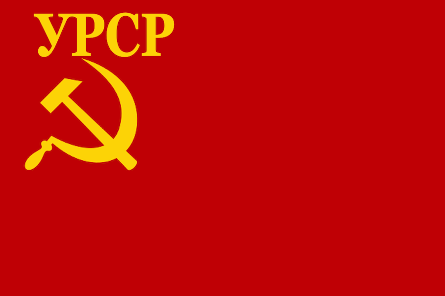 Ukrainian Socialist Republic |
No | |
| Orhanizatsiia Ukrainskykh Natsionalistiv (OUN) | 30% | Stepan Bandera | 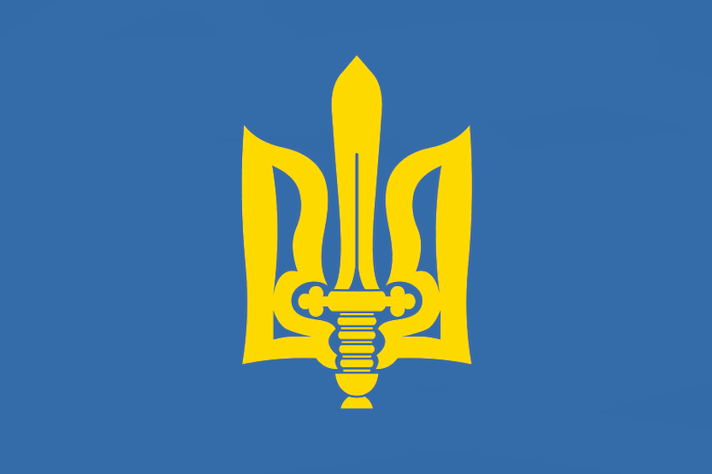 Ukrainian Nationalist State |
No | |
| Hetman usiiei Ukrainy | 0% | 通用 | 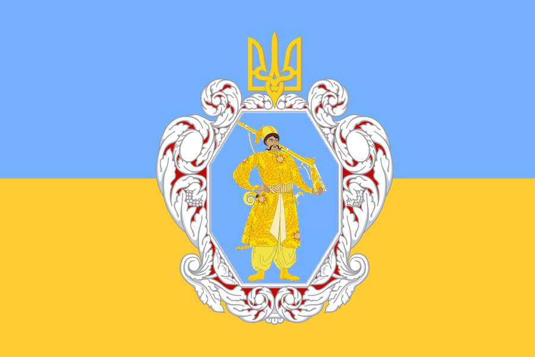 Ukrainian Hetmanate |
No |
 苏联
苏联  共产主义 subject name: Ukrainian Independent SSR
共产主义 subject name: Ukrainian Independent SSR
| 意识形态 | 肖像 | 名称 | 党派 | 特质 | 效果 | 可用 |
|---|---|---|---|---|---|---|
保守主义 |
Kost Levytsky | Ukrainian National Democratic Alliance | – | – | 起始领袖 | |
马克思主义 |
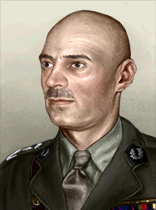 |
尼基塔·赫鲁晓夫 | Komunistychna Partiya Ukrayiny | – | – | 起始领袖 |
法西斯主义 |
Stepan Bandera | Orhanizatsiia Ukrainskykh Natsionalistiv | – | – | 起始领袖 | |
Despotism |
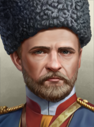 |
Mykhailo Pavlenko | Hetman usiiei Ukrainy | 哥萨克国王 |
|
Via the |
Despotism |
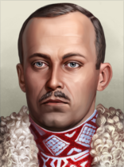 |
Vasyl Vyshyvanyi von Habsburg | Hetman usiiei Ukrainy | The Habsburg Hetman |
|
Via the 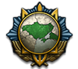 The Kingdom of Ukraine |
| 肖像 | 名称 | 特质 | 要求 | |||||
|---|---|---|---|---|---|---|---|---|
| Mykhailo Pavlenko | 3 | 3 | 1 | 2 | 2 | 骑兵将领 冬季专家 |
| |
| Vasyl Vyshyvanyi von Habsburg | 4 | 3 | 2 | 4 | 4 | 组织者 步兵将领 凶猛突击者 魅力非凡 |
|
| 肖像 | 名称 | 特质 | 要求 | |||||
|---|---|---|---|---|---|---|---|---|
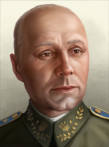 |
Pavlo Shandruk | 2 | 2 | 2 | 2 | 1 | 游骑兵 |
– |
乌兹别克斯坦共和国 开局时为民主主义，每 4 年举行一次选举。下一次选举在 1940 年 1 月。
开局时为民主主义，每 4 年举行一次选举。下一次选举在 1940 年 1 月。
| 政党 | 意识形态 | 支持率 | 党派领袖 | 国家名称 | 是否执政？ |
|---|---|---|---|---|---|
| 民主主义 | 50% | 通用 | 乌兹别克斯坦共和国 | 是 | |
| 共产主义 | 40% | 通用 | Uzbek Soviet Socialist Republic | No | |
| 法西斯主义 | 1% | 通用 | Uzbek Khanate | No | |
| 中立主义 | 9% | 通用 | Uzbekistan | No |
 Uzbekistan can form Turkestan
Uzbekistan can form Turkestan
符拉迪沃斯托克独立共和国 开局时为民主主义，每 4 年举行一次选举。下一次选举在 1940 年 1 月。
开局时为民主主义，每 4 年举行一次选举。下一次选举在 1940 年 1 月。
| 政党 | 意识形态 | 支持率 | 党派领袖 | 国家名称 | 是否执政？ |
|---|---|---|---|---|---|
| Vladivostok Duma (VVD) | 50% | 通用 | 符拉迪沃斯托克独立共和国 | 是 | |
| The Vladivostok All-Communist Assembly (VCA) | 30% | 通用 | Vladivostok Syndicalist Collective | No | |
| The Russo-Japanese Unification Party (RJU) | 20% | 通用 | Far Eastern Russo-Japanese State | No | |
| White Army Remnants (WAR) | 0% | 通用 | Vladivostok Interventionalist State | No |
 苏联
苏联  共产主义 subject name: Primorsky Krai
共产主义 subject name: Primorsky Krai
 日本
日本  中立主义 subject name: Transamur Protectorate
中立主义 subject name: Transamur Protectorate
 日本
日本  法西斯主义 subject name: Primorsky Autonomous District
法西斯主义 subject name: Primorsky Autonomous District
 符拉迪沃斯托克 can form 西伯利亚
符拉迪沃斯托克 can form 西伯利亚
伏尔加德意志共和国 开局时为民主主义，每 4 年举行一次选举。下一次选举在 1940 年 1 月。
开局时为民主主义，每 4 年举行一次选举。下一次选举在 1940 年 1 月。
| 政党 | 意识形态 | 支持率 | 党派领袖 | 国家名称 | 是否执政？ |
|---|---|---|---|---|---|
| Die Wolgadaitsche Demokratische Union (WDU) | 60% | 通用 | 伏尔加德意志共和国 | 是 | |
| Die Wolgadaitsche Arbeitergewerkschaft (WDA) | 30% | Heinrich Lüft | Volga German Workers Union | No | |
| Die Wolgadaitsche Bruderschaft (WDB) | 10% | 通用 | Volga German Reich | No | |
| Wolgadaitscher Militärjunta (WDM) | 0% | 通用 | Volga German State | No |
 苏联
苏联  共产主义 subject name: Volga German Autonomous Soviet Socialst Republic
共产主义 subject name: Volga German Autonomous Soviet Socialst Republic
 德国
德国  法西斯主义 subject name: Reichskommissariat Wolga Deutschland
法西斯主义 subject name: Reichskommissariat Wolga Deutschland
| 意识形态 | 肖像 | 名称 | 党派 | 特质 | 效果 | 可用 |
|---|---|---|---|---|---|---|
马克思主义 |
Heinrich Lüft | Die Wolgadaitsche Arbeitergewerkschaft | – | – | 起始领袖 | |
马克思主义 |
Alexander Heckman | Die Wolgadaitsche Arbeitergewerkschaft | – | – | If Heinrich Lüft retires |
 伏尔加德意志 can form
伏尔加德意志 can form  德国
德国
亚马尔共和国 开局时为民主主义，每 4 年举行一次选举。下一次选举在 1940 年 1 月。
开局时为民主主义，每 4 年举行一次选举。下一次选举在 1940 年 1 月。
| 政党 | 意识形态 | 支持率 | 党派领袖 | 国家名称 | 是否执政？ |
|---|---|---|---|---|---|
| Yamalo-Nenets National Duma (YND) | 70% | 通用 | 亚马尔共和国 | 是 | |
| East-Nenets Bolshevik Party (NBP) | 20% | 通用 | Yamalo-Nenets Soviet | No | |
| Samoyed Unification Party (SUP) | 0% | 通用 | Pan-Nenets Unitary State | No | |
| East-Nenets Independence Party (ENI) | 10% | 通用 | Yamalo-Nenetsian Migratory State | No |
 苏联
苏联  共产主义 subject name: Yamalo-Nenets National Okrug
共产主义 subject name: Yamalo-Nenets National Okrug
 日本
日本  中立主义 subject name: Autonomous Yamalo-Nenetsian Protectorate
中立主义 subject name: Autonomous Yamalo-Nenetsian Protectorate
 日本
日本  法西斯主义 subject name: Northeast Ural Autonomous District
法西斯主义 subject name: Northeast Ural Autonomous District
 Yamalia can form 西伯利亚
Yamalia can form 西伯利亚
| 西欧 |
|
| 东欧 |
| 西欧 |
|
| 东欧 |
| 苏联 |
|